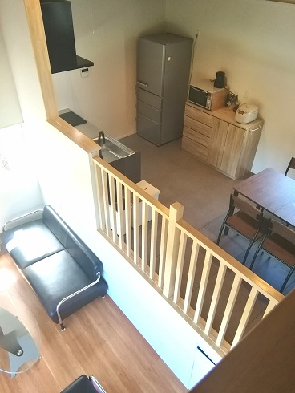
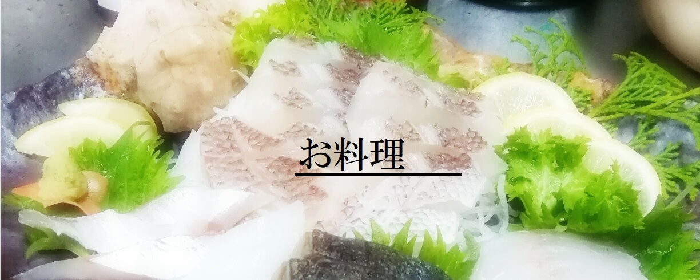
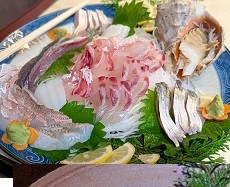
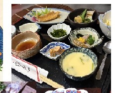
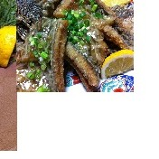
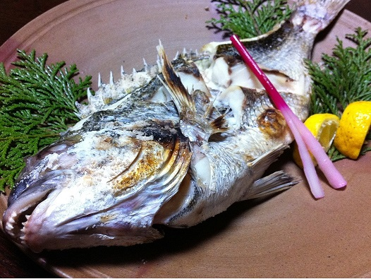
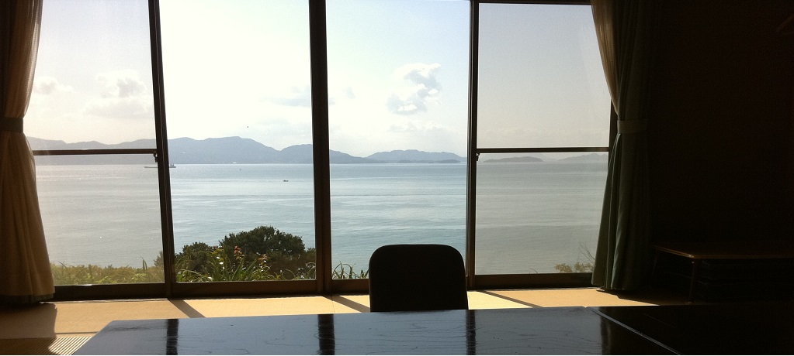
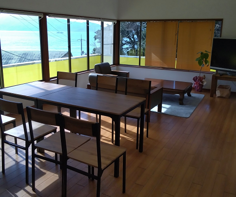

写真
準備中
準備中
Nanpu Villa
南風ヴィラ
みんなで、わいわい。
3階建てで、グループみんなでワイワイ過ごせる離れ。にぎやかな時間にぴったり。ペットと一緒にご宿泊いただけます。
グループ向け
3階建て
ペット同伴可

牛窓からフェリーで5分。お店が一軒もない、のどかな島「前島」。
高台の宿から、小豆島に沈む夕日をどうぞ。
南風荘の名物は、瀬戸内の新鮮な海の幸。畳のお部屋で、海を眺めながらの食事。旬の味を、いちばんおいしいかたちで。昼の会食のみのご利用も承ります。





ときには大将が自ら海へ漁に出て、その日いちばんの魚をお出しします。獲れたての鮮度を、そのまま食卓へ。
島と海の恵みを、できるだけそのままの姿で。地産地消を大切に、旬をいちばんおいしい時季にお出しします。
お弁当のテイクアウトあり。ご宿泊なしでも、昼の会食のみのご利用が可能です。お気軽にご相談ください。

牛窓の港からフェリーでわずか5分、前島の南側の高台。正面には小豆島や香川の山並みが一望でき、砂浜までは歩いて4分ほどです。
本館のほか、それぞれに趣のちがう3棟の離れをご用意。清掃・消毒・タオル類は毎日交換、プライバシーに配慮した造りです。


海を独り占めできる、大人ふたりのための和風の離れ。記念日やお誕生日、ちょっと特別な週末に。静かに寄り添う時間を、海を眺めながら。カップル・ご夫婦はもちろん、大切な人とのひとときを求めるすべての世代におすすめです。

3階建てで、グループみんなでワイワイ過ごせる離れ。にぎやかな時間にぴったり。ペットと一緒にご宿泊いただけます。

家族でほっこり過ごす、島の一軒家。わが家のようにくつろげる離れです。ペットと一緒にご宿泊いただけます。
「魚のごちそうも勿論ですが、部屋からの景色も最高なごちそうです。まったり出来て心の底からリラックスできます。聞こえるのは波の音と鳥や虫の声だけ」
「今回初めて帰りのフェリーが欠航という思わぬハプニングがありましたが、大将と女将さんのあたたかいご対応で不安を感じず安心して再開を待つことができました」
「部屋からの景色が最高です！2部屋使えるのでゆっくり出来ますし、料理も美味しく、民宿の方も皆さん感じの良い方ばかりでした。犬の事も可愛がって下さり嬉しかったです」
「目の前が海の絶景。とにかくお料理が美味しいです！新鮮なお魚がお酒に合う。スタッフの方々のおもてなしも良く実家に帰ったようにとてもくつろげました」